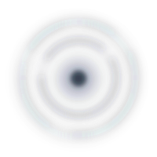
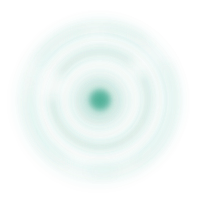

Color
컬러 팔레트
청자의 맑은 초록을 중심으로, 한지 종이의 따뜻한 중립색과 상태 색을 함께 사용해요. 각 칩은 토큰 값을 그대로 보여줍니다.
청자 (Celadon)
중립 · 종이 (Neutrals & Paper)
상태 (Status: P1–P4)
Type
타이포그래피
본문 서체는 Pretendard(--font)예요. 큰 제목일수록 자간을 촘촘하게(−0.03 ~ −0.045em) 조여 단정한 인상을 만듭니다.
온기를 담다
부모님의 하루를 잇다
가족이 함께 보는 안부
매주 안부 전화와 금요편지로 부모님의 이야기를 차곡차곡 모아드려요.
On:Gi는 요금제가 아니라 부모님과 함께하는 방법을 제안합니다. 씨앗, 이야기, 평생 — 세 가지 방식 모두 이음과 새김을 자유롭게 선택할 수 있어요.
케어 신호 · 평안 · 살핌 · 확인
Shape & Elevation
라운드 & 그림자
부드러운 모서리와 아주 옅은 그림자로 한지 위에 놓인 듯한 깊이를 표현해요.
라운드 (Radius)
--r-sm · 10px
--r-md · 16px
--r-lg · 22px
--r-xl · 32px
그림자 (Shadow)
--sh-1
--sh-2
--sh-3
Brand Mark
브랜드 마크
워드마크 “On:Gi”와 심볼을 함께 사용해요. 워드마크의 콜론 뒤 점(dot)은 청자색으로, 잇고 새기는 온기의 신호예요.
On:Gi
워드마크 — Pretendard 700, 자간 −0.04em. 시그니처 점은 --primary(celadon-500).


브랜드를 함께 그려나가요
On:Gi의 디자인과 톤을 어떻게 담아낼지, 팀에게 맞는 방법을 함께 찾아드립니다.
상담 신청하기